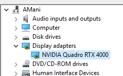
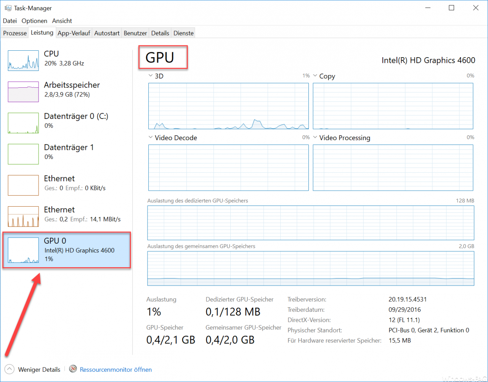
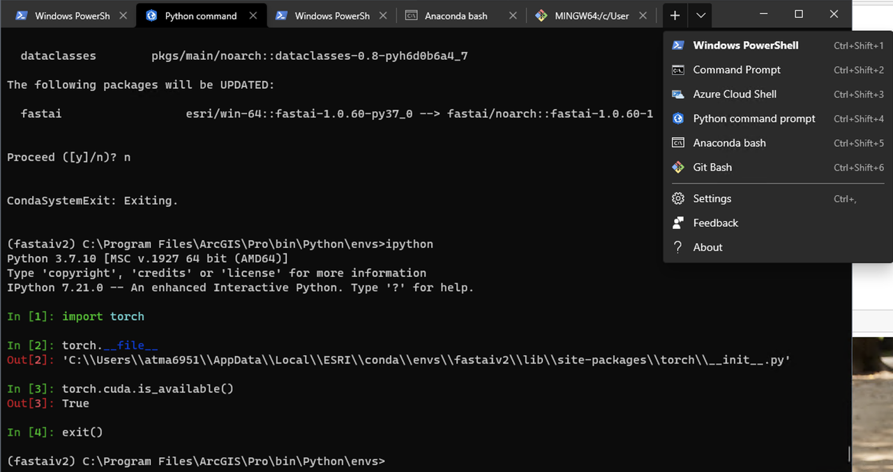

Configure GPU on Windows OS
Note: This doc assumes a GPU has been properly attached on your machine. The purpose of this doc is to help you configure it correctly for deep learning.
Jeremy Howard says don't spend time setting up your own GPU workstation for deep learning and accordingly, their documentation for the same is slim. Hence this is a doc for how to use your GPU enabled Windows workstation for learning and building on top of Fastai for deep learning.
Step 1 - Check if you have a GPU and the appropriate drivers¶
-
Ensure your machine has GPU and appropriate drivers. As of this wiki, only Nvidia CUDA compatible drivers are usable for deep learning. You can verify this from Windows Device Manager. See pic below:

-
If you don't have a GPU, you need to recheck how the hardware is installed.
-
Use the task manager to see if you have a 'GPU' section (similar to the 'CPU' section) as shown below. If you don't see the GPU section, you might be running an older build of Windows 10. We will solve this issue as well. If GPU shows up, ignore step 3.

-
Check if drivers for the GPU are installed. Run
nvidia-smifrom terminal. The output should look like below. If it does, ignore step 4. If you see an error, you either don't have the drivers, or you have drivers, but not added the nvidia tool to%path%. We will do these in the following steps.
Step 2 - Optional - Install new Windows terminal¶
- Unlike OSX and Linux, Windows does not have a proper terminal. The default command prompt has limited features and is cumbersome for most advanced users.
- Install the new terminal from https://github.com/Microsoft/Terminal. This is still a beta product, however adds some useful features like multiple tabs, configurable prompts, better font, better copy paste experience, resize & reflow to name a few.
-
I was able to add Git bash, Pro Python Command Prompt, Anaconda Navigator as additional prompts for convenience (as shown below:)

Step 3 - Update Windows 10 build.¶
- You need the the 2017 Fall update or later builds to see the GPU tab in the task manager. Your GPU should also be compatible, but the chances that it is not is slim.
-
To update your OS, open the command center / control panel and search for 'Update'. Then enable Windows to update. Your machine might restart multiple times depending on where you are on the update cycle. My machine was reimaged to have the latest OS and below is the OS version for reference:

Step 4 - Install GPU drivers¶
- If you suspect NVIDIA driver is not installed, you need to download it from https://www.nvidia.com/Download/index.aspx?lang=en-us. Enter your GPU type and download the drivers. Install the drivers.
- Try to rerun the
nvidia-smitool. If you see an error that such a tool is not found, search for it in the Program Files. In my case, it was located atC:\Program Files\NVIDIA Corporation\NVSMI. - Add
C:\Program Files\NVIDIA Corporation\NVSMIto Windows Path. Here is a help article for this. Then retry the command.